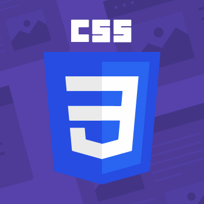

faruk15-5874@diu.edu.bd
Md. Omar Faruk
About
Hello,
A passionate Data Analyst committed to turning complex datasets into meaningful insights. With a strong foundation in data analytics, statistical modeling, and visualization tools, I specialize in uncovering patterns, solving real-world problems, and driving informed decisions through data-driven storytelling.
Education and Qualification
School
Siraj Uddin Sarker Vidyaniketan & College
Degree: Primary School Certificate (PSC)
Year: 2011
Completed primary education with a focus on foundational subjects. Achieved high grades in the PSC examination.
College
Rajuk Uttara Model College
Degree: Secondary School Certificate (SSC) & Higher Secondary Certificate (HSC)
Year: 2017 & 2019
Pursued secondary and higher secondary education in Science. Participated in extracurricular activities.
University
Daffodil International University
Degree: Bachelor of Science in Computer Science and Engineering (BSc in CSE)
Year: 2022-2025
Studying CSE with focus on Data Analytics and Software Development. Engaged in data visualization projects.
Skills
C
Proficient in C programming for system-level development and competitive programming, demonstrating strong understanding of algorithms and data structures.
JAVA
Experienced in Java for object-oriented programming, enterprise applications, and Android development. Capable of building robust and scalable solutions.
PYTHON
Skilled in Python for data analysis, machine learning, web development, and automation. Adept at leveraging libraries like Pandas, NumPy, and Scikit-learn.

MACHINE LEARNING
Solid understanding of machine learning algorithms, including supervised and unsupervised learning, model training, evaluation, and deployment.
NLP
Familiar with Natural Language Processing techniques for text analysis, sentiment analysis, and building conversational AI systems.
DEEP LEARNING
Knowledgeable in deep learning frameworks like TensorFlow/Keras and PyTorch, capable of designing and implementing neural networks for complex tasks.
HTML5
With a solid foundation in data analytics, I’ve explored everything from preprocessing complex datasets to uncovering trends using visualization and statistics. I strive to make data both understandable and actionable.

CSS3
I had a solid grasp on data structuring and cleaning, I advanced to data visualization to bring insights to life. I’ve created compelling dashboards, implemented dynamic charts, and presented analytical stories that not only look polished but also adapt to various audiences and decision-makers.
JAVASCRIPT
With scripting and automation, I’ve added a new layer of power to my analytical skills—developing interactive reports, automating complex tasks, and making data exploration faster and more efficient.

PHP
Proficient in PHP for server-side scripting and web development, capable of building dynamic web applications and interacting with databases.
My Projects
My Calculator Project
Developed a functional calculator using HTML, CSS, and JavaScript. This project demonstrates my proficiency in front-end web development and basic arithmetic logic.
Learn More →My Wedding Biodata Project
Created an interactive wedding biodata form, showcasing data collection, form validation, and user experience design. This project highlights my ability to build user-friendly interfaces.
Learn More →Daraz
Developed a clone of Daraz e-commerce website, demonstrating front-end development skills using HTML, CSS, and JavaScript.
Learn More →Biodata CRUD Operation Project
Created an interactive wedding biodata form, showcasing data collection, form validation, and user experience design. This project highlights my ability to build user-friendly interfaces.
Learn More →Contact Information
Phone
+880 1521567931
Location
Dhaka, Bangladesh